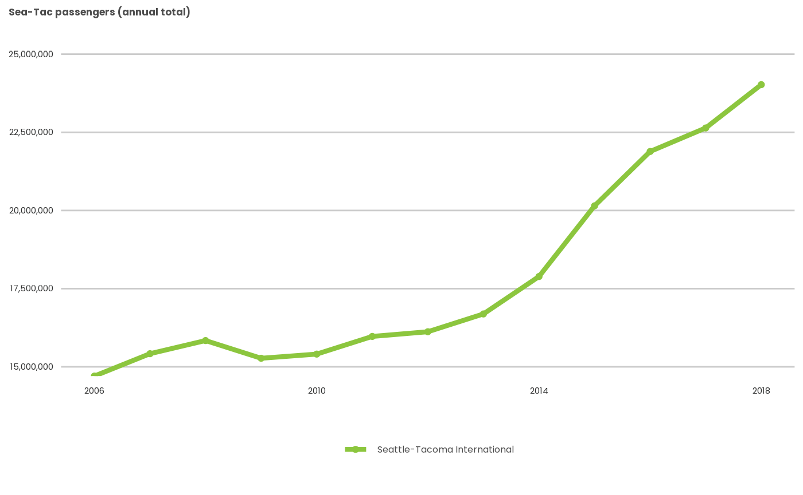
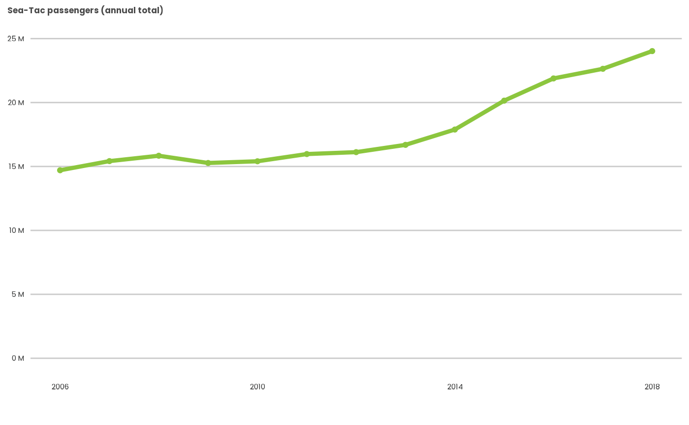

Customization
customization-4.RmdA good thing only goes so far . . .
Despite our best efforts, psrcplot cannot be all things to all people. ¯\_ (ツ)_/¯ There will always be cases in which the vanilla PSRC standard will need adjustment, either based on the plot content or to fit the publication in which it features.
Luckily, as ggplot2 objects, static charts can be
extensively tinkered with through ggplot2’s
+ syntax. Even interactive plots can
benefit from this treatment–if done on a static ggplot2
object (and made into interactive plotly objects
afterwards).
There are also times where you’ll want to handle things like plot titles or captions in the surrounding document rather than as elements of the plot itself. We’ve found this particularly true of interactive plots, as the alignment options in plotly are limited, and the titles may display as clipped (sometimes completely out of frame) depending on relative frame dimensions. In such cases, it may be easier to simply leave the title and subtitle arguments out.
Adding or revising static plots with ggplot2
Static psrcplot charts ggplot objects and can be edited using ggplot2 commands. In this example, we create a line chart, then alter the axis scale as well as drop the legend (since that information is in the title).
## Warning: package 'dplyr' was built under R version 4.2.2
passenger_volume <- enplanement_example_data %>%
filter(loc_id=="SEA") %>%
mutate(data_year=as.character(data_year))
static_plot <- static_line_chart(t=passenger_volume,
x='data_year', y='enplanements', fill='airport_name',
title="Sea-Tac passengers (annual total)",
lwidth = 1.5,
breaks = seq(2006, 2018, 4))
static_plot
static_rev <- static_plot + ggplot2::scale_y_continuous(
limits=c(0,25e6),
labels=scales::unit_format(unit="M", scale=1e-6)) +
ggplot2::guides(color="none")
static_rev
Applying PSRC styles to ggplot2 objects created outside psrcplot
For those who create plots directly with ggplot2, you can still apply
PSRC formats using the psrc_style()
function.
Making a custom plot interactive
You can use the function psrcplot::make_interactive()
to convert a psrcplot or ggplot2
object to an interactive plotly object with PSRC
styling. Due to constraints in plotly, you must
currently specify the source argument as well.
interactive_plot <- static_rev %>% make_interactive()
interactive_plotSince we can’t see the future and plotly can be a
little eccentric, there are no guarantees this command will by itself
generate exactly what you want, but it should help. Some further
tweaking in plotly may be required via the plotly::style()
and ::layout() commands.